Jos van de Wolfshaar (s2098407)
Siebert Looije
Diederik Greveling
Date: March 13, 2016
Since any player can only see those cards that are on the forehead of the other players, the relations are defined as 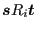 such that 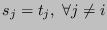. A player's card is unique: 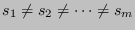. Note that relations are symmetric and reflexive.
Suppose we take a subset of the total deck 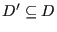 with 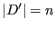. There are 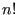 different sequences of cards. If the number of players is 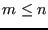, then for each possible set of cards there will be 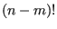 games with the same sequence of cards for the first 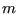 cards. Hence, the total number of possible games is:
| 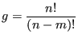 | (1) |
The propositions in our model will be given by
 . For example, 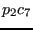 means that player 2 holds card 7. The proposition 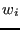 means that player wins the game, whereas 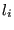 means that player loses the game.
. For example, 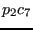 means that player 2 holds card 7. The proposition 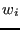 means that player wins the game, whereas 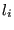 means that player loses the game.
The valuation will be as follows:
| 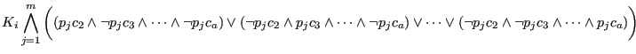 |
The moment that the players put the cards on their foreheads it is as if announcements are made. Every player announces that he knows what the other players' cards are (without actually saying it). This means that every player also knows his remaining possibilities.
In the most general case, we could express this as follows:
| 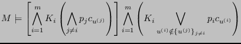 |
 possible games. Once the cards are dealt, each player is able to see the other players' cards. Because of the fact that and the fact that all cards are unique, for any pair of states
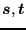 such that
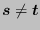, we have that at least two cards are changed:
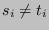 and
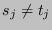 for 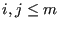 and 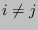.
possible games. Once the cards are dealt, each player is able to see the other players' cards. Because of the fact that and the fact that all cards are unique, for any pair of states
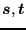 such that
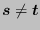, we have that at least two cards are changed:
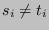 and
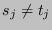 for 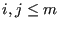 and 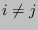.
This implies that there are only reflexive relations:
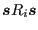, since for any other
 , we require that all cards but one are the same. For any state
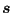 this relation is only satisfied by
itself.
, we require that all cards but one are the same. For any state
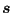 this relation is only satisfied by
itself.
Therefore, once a player sees the other players' cards, he will know his own card, since there is only one state to go to. Hence, each player knows whether he wins or loses. Therefore, from a game theoretic point of view, this scenario is not particularly interesting.
TODO: maybe formalize this more...
| (2) |
The relations are symmetric. Hence, will be the same for all states.
The utility of losing a game will be given by:
Now we can define a player's strategy for calling any bet as follows. Let
 denote the decision of player at round , where
corresponds to calling the bet and
corresponds to folding. The decision will be given by:
denote the decision of player at round , where
corresponds to calling the bet and
corresponds to folding. The decision will be given by:
We can also decide to make the gain a bit more specific:
It is interesting to see if we can let the players deduce the value of for the other players. Until then, it seems reasonable to simplify equation ( ) to:
) to:
Based on the information that is available, a player can estimate the utilities of other players. Hence, it can make its own estimations of the other players' gains: , which is the estimated gain for player from player 's point of view.
The estimations can be obtained by using equations ( ) through (
) through ( ), but now we will start with some estimated probability
, from equation (
), but now we will start with some estimated probability
, from equation ( ).
).
Once we have the estimated gains we can make an estimation of the other player's decisions. For bluffing we want to achieve that
for the players . Hence, if a player decides to bluff, he should try to ensure that
 for those player's that have a higher probability of winning. Formally, it should make at least those players fold such that
.
for those player's that have a higher probability of winning. Formally, it should make at least those players fold such that
.
As of now, we will not consider bluffing in full detail.
Let's extend our set of propositions to in which will resemble a risky strategy for player , will be used for optimal strategy and for safe or `harmless' strategy. A risky strategy will mean that , an optimal strategy will mean that and a harmless strategy will resemble .
Note that we have:
| (9) |
At the first round, the players know nothing about each other's strategies (given by ). Hence, they will play based solely on what they see by looking at the opponents' foreheads.
There is no way to estimate the decisions of the other players yet. Hence, we will compute the gain simply by adding the losses of the other people (equation  ). Note that this should be simply
). Note that this should be simply  .
.
Once we have the gain, we can compute the utility of winning a game and so we can also obtain the decision for each player (equation  ).
).
First, suppose that
 . Now any player knows that the threshold of 0 was exceeded. Hence each player knows
. Now any player knows that the threshold of 0 was exceeded. Hence each player knows
Second, suppose that . Now any player knows:
In either case, we could consider it to be an announcement of the possibilities that are left. For example, if players find that , it is as if it is announced that . In other words, we might not gain any information. However, a series of rounds could enable agents to deduce . For example, let's say that three rounds are played, in which . This sequence of announcements can be captured by:
TODO: now that we have , how does it change the dynamics of the game?
This document was generated using the LaTeX2HTML translator Version 2008 (1.71)
Copyright © 1993, 1994, 1995, 1996,
Nikos Drakos,
Computer Based Learning Unit, University of Leeds.
Copyright © 1997, 1998, 1999,
Ross Moore,
Mathematics Department, Macquarie University, Sydney.
The command line arguments were:
latex2html foreheadidiot.tex -split 0
The translation was initiated by root on 2016-03-13